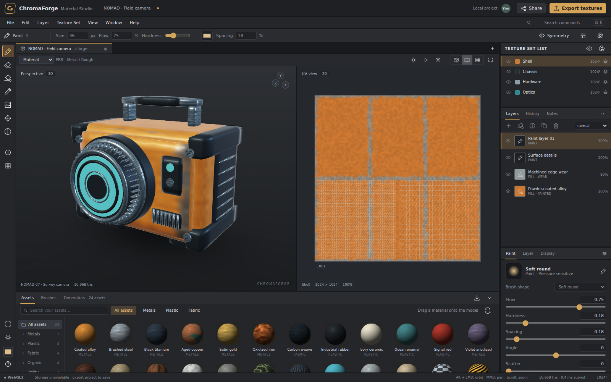

Paint with intention.
Pressure-sensitive strokes, eight brush tips, channel selection, masks, image decals, and editable fill materials. Work directly on the mesh or in UV space.
From the first brushstroke to the final texture set. A browser-native workspace for painting, layering, and exploring materials in 3D.
Stay close to your material. Split views, compact controls, and resizable panels keep the mesh, UVs, and layers in one place.

Enter the workspace ↗Pressure-sensitive strokes, eight brush tips, channel selection, masks, image decals, and editable fill materials. Work directly on the mesh or in UV space.
Layer color, roughness, metallic, height, emissive, and opacity. Explore original procedural materials, then export PNG maps in one ZIP.
Share an explicit project copy through the included server. Invite editors or viewers, see their cursors, and keep notes alongside your work.
* Multi-user collaboration requires the included Node.js / SQLite service. A static site runs the editor locally; it does not host a collaboration database.
Use the whole workspace, or take the pieces. Six self-contained ES module packages separate document logic, geometry, texture authoring, rendering, controls, and collaboration.
Open the renderer example ↗import { MaterialRenderer }
from './libraries/renderer.js';
import { createModel }
from './libraries/geometry.js';
const viewport = new MaterialRenderer(canvas);
await viewport.initialize();
viewport.setMesh(createModel('sphere'));
// Supply composited material maps.
viewport.upload(0, textureOutput, 1);
viewport.draw();Use Node.js 22.16 or newer. The application has no runtime npm dependencies.
npm start
# Open http://localhost:8787Use the server for local autosave and authenticated shared rooms. Keep its data/ directory for persistent accounts and projects.
Create the standalone HTML, static website, and individual library modules.
npm test
npm run build
npm run pack:librariesServe dist/site/ over HTTPS. For collaboration, deploy the complete Node service rather than only the static files.
ChromaForge is an independent implementation, not an Adobe product. Native SPP/SBSAR, virtual UDIM streaming, high-to-low cage baking, particle painting, production color management, and full enterprise administration are not included. WebGPU is preferred where available, with WebGL2 and a reduced software compatibility renderer as fallbacks.